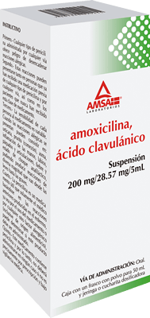

La amoxicilina se usa para tratar ciertas infecciones causadas por bacterias, como neumonía, bronquitis (infección de las vías respiratorias que van a los pulmones) e infecciones de los oídos, la nariz, la garganta, las vías urinarias y la piel. También se usa en combinación con otros medicamentos para eliminar la H. pylori, una bacteria que provoca úlceras. La amoxicilina pertenece a una clase de medicamentos llamados antibióticos similares a la penicilina. Su acción consiste en detener el crecimiento de las bacterias.
